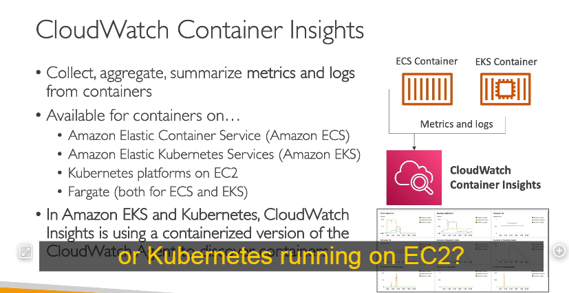

 Dưới đây là chi tiết kiến thức về CloudWatch Insights, bao gồm Container Insights, Lambda Insights, Contributor Insights, và Application Insights.
Dưới đây là chi tiết kiến thức về CloudWatch Insights, bao gồm Container Insights, Lambda Insights, Contributor Insights, và Application Insights.
📌 AWS CloudWatch Insights
CloudWatch Insights là tập hợp các công cụ giám sát và phân tích hiệu suất của hệ thống AWS. Các loại chính bao gồm:
- CloudWatch Container Insights
- CloudWatch Lambda Insights
- CloudWatch Contributor Insights
- CloudWatch Application Insights
1. CloudWatch Container Insights 🐳
Chức năng
- Thu thập, tổng hợp và tóm tắt metrics & logs từ các container.
- Hỗ trợ các nền tảng container:
- Amazon ECS (Elastic Container Service)
- Amazon EKS (Elastic Kubernetes Service)
- Kubernetes chạy trên EC2
- AWS Fargate (cả ECS & EKS)
Cách hoạt động
- Tự động thu thập dữ liệu hiệu suất như CPU, bộ nhớ, disk I/O, network.
- Nếu chạy trên Kubernetes (EKS hoặc Kubernetes trên EC2), nó sử dụng CloudWatch Agent dưới dạng một container để thu thập dữ liệu.
Lợi ích
✅ Tạo dashboard chi tiết để giám sát container.
✅ Phát hiện lỗi nhanh chóng thông qua log và metrics.
✅ Tích hợp sẵn với CloudWatch Logs & Metrics.
2. CloudWatch Lambda Insights ⚡
Chức năng
- Cung cấp công cụ giám sát và khắc phục sự cố cho ứng dụng serverless chạy trên AWS Lambda.
- Thu thập metrics chi tiết về:
- CPU time
- Bộ nhớ
- Disk & network usage
- Cold starts
- Lambda worker shutdowns
Cách hoạt động
- Chạy dưới dạng một Lambda Layer, thu thập dữ liệu song song với Lambda function.
- Dữ liệu được hiển thị trong dashboard chuyên biệt gọi là Lambda Insights.
Lợi ích
✅ Phát hiện bottleneck (điểm nghẽn) của Lambda function.
✅ Giám sát thời gian cold start để tối ưu hiệu suất.
✅ Phát hiện các lỗi worker shutdown trong quá trình thực thi.
3. CloudWatch Contributor Insights 🔍
Chức năng
- Phân tích log và tạo biểu đồ theo thời gian thực để xác định nguồn tác động đến hiệu suất hệ thống.
- Xác định top N contributor gây ảnh hưởng đến hệ thống.
Trường hợp sử dụng
- Phát hiện "top talkers" trong mạng → Phân tích VPC Flow Logs để tìm ra địa chỉ IP sử dụng băng thông nhiều nhất.
- Tìm lỗi DNS → Xác định tên miền nào gây ra nhiều lỗi nhất từ DNS logs.
- Phát hiện host xấu → Tìm các IP đang gửi quá nhiều request đến hệ thống.
Cách hoạt động
- VPC Flow Logs ghi lại mọi yêu cầu mạng.
- Logs được gửi đến CloudWatch Logs.
- CloudWatch Contributor Insights phân tích dữ liệu để tìm top contributors.
Lợi ích
✅ Giúp xác định nguyên nhân chính gây quá tải hệ thống.
✅ Phát hiện tấn công DDoS bằng cách xem IP nào tạo nhiều kết nối bất thường.
✅ Có thể tạo rules tùy chỉnh hoặc sử dụng rules có sẵn từ AWS.
4. CloudWatch Application Insights 🏛️
Chức năng
- Tự động tạo dashboard hiển thị các vấn đề tiềm ẩn của ứng dụng.
- Hỗ trợ các nền tảng chạy trên EC2 hoặc AWS dịch vụ khác, ví dụ:
- Java, .NET, IIS Web Server
- Database (RDS, DynamoDB)
- EBS, ELB, ASG, Lambda, API Gateway, S3, ECS, EKS...
Cách hoạt động
- Giám sát ứng dụng và tài nguyên liên quan.
- Khi xảy ra sự cố, Application Insights tự động tạo dashboard hiển thị nguyên nhân.
- Sử dụng Amazon SageMaker (AI/ML) để phát hiện lỗi tự động.
- Gửi cảnh báo đến Amazon EventBridge & AWS SSM OpsCenter.
Lợi ích
✅ Rút ngắn thời gian khắc phục sự cố bằng cách hiển thị vấn đề trực quan.
✅ Tích hợp AI/ML (SageMaker) giúp dự đoán lỗi.
✅ Cảnh báo tự động khi phát hiện lỗi.
📌 Tóm tắt kiến thức quan trọng
| Dịch vụ | Chức năng chính | Ứng dụng |
|---|---|---|
| CloudWatch Container Insights | Giám sát metrics & logs từ ECS, EKS, Kubernetes, Fargate | Xem hiệu suất container, debug lỗi |
| CloudWatch Lambda Insights | Giám sát chi tiết AWS Lambda (CPU, memory, cold start...) | Tối ưu Lambda function |
| CloudWatch Contributor Insights | Xác định top contributors từ logs | Phát hiện botnet, DDoS, lỗi DNS, băng thông mạng |
| CloudWatch Application Insights | Tự động tạo dashboard khi có lỗi ứng dụng | Phát hiện lỗi EC2, RDS, API Gateway, DynamoDB... |